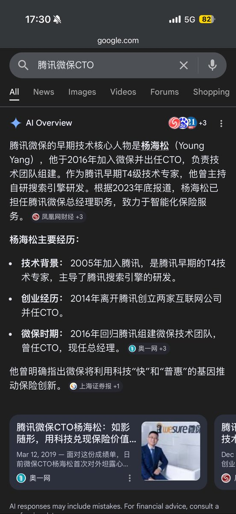

不知道包什么的番茄（私信互关）
@bcfqdtfqz
@hzqsns 就是你们在我刷微信短视频的时候突然来一个视频问我得了心脏病肺癌脑溢血怎么办是吧

Sakura🜃
@hzqsns
汗流浃背了居然是tx最年轻的科学家面我，聊了半天后面查资料才知道这么强，还跟
我是校友x
为啥这种还要面我这种小兵啊
不过里面工位是真的新，薄纱我在ks和bd的工位喵
而且感觉里面的人才是人，之前上班感觉周围都是螺丝钉，没有一点生机活力的😰 https://t.co/n1TQcj2UrP https://t.co/LKZCrYocAQ